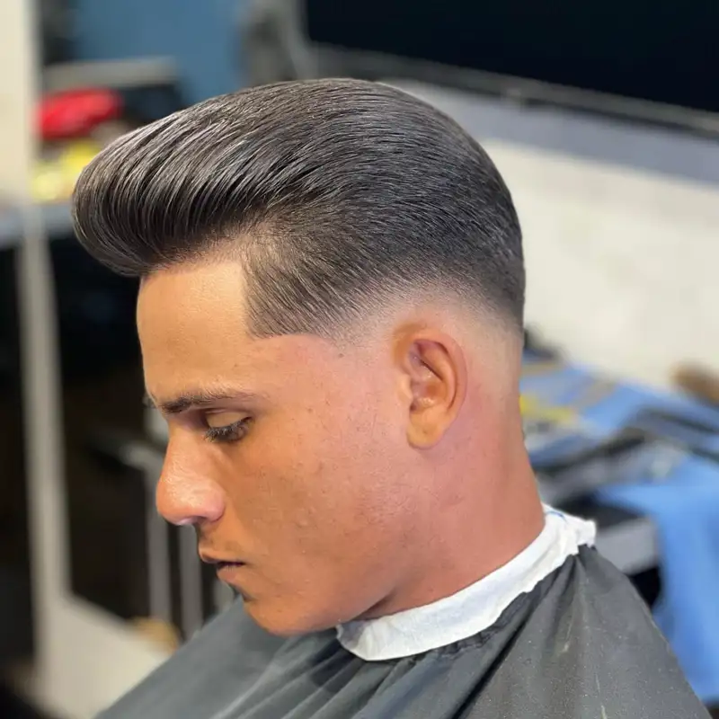
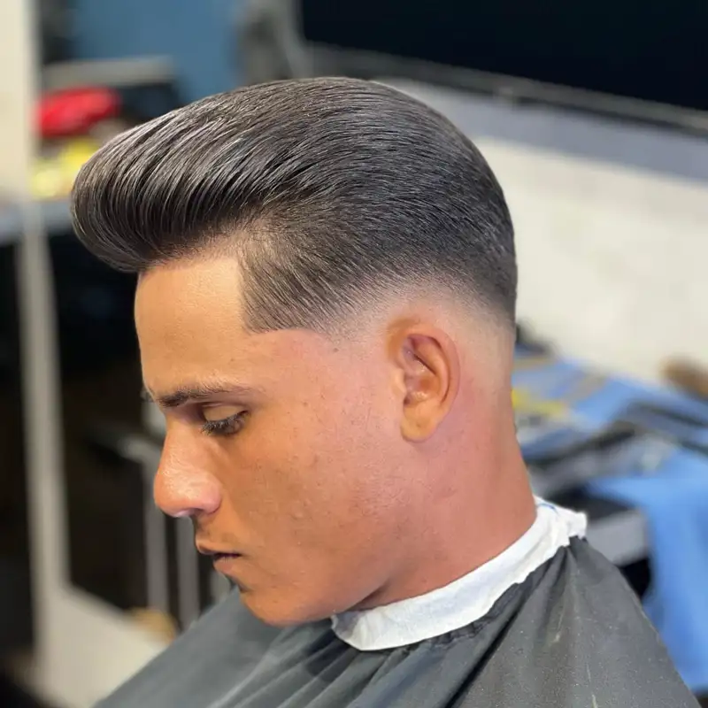
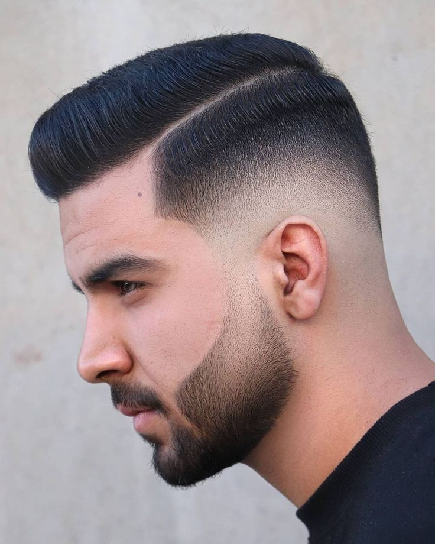
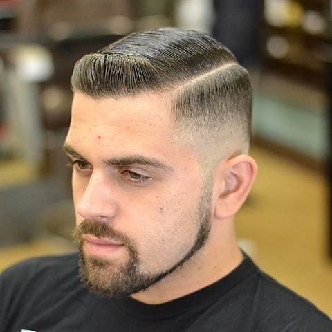
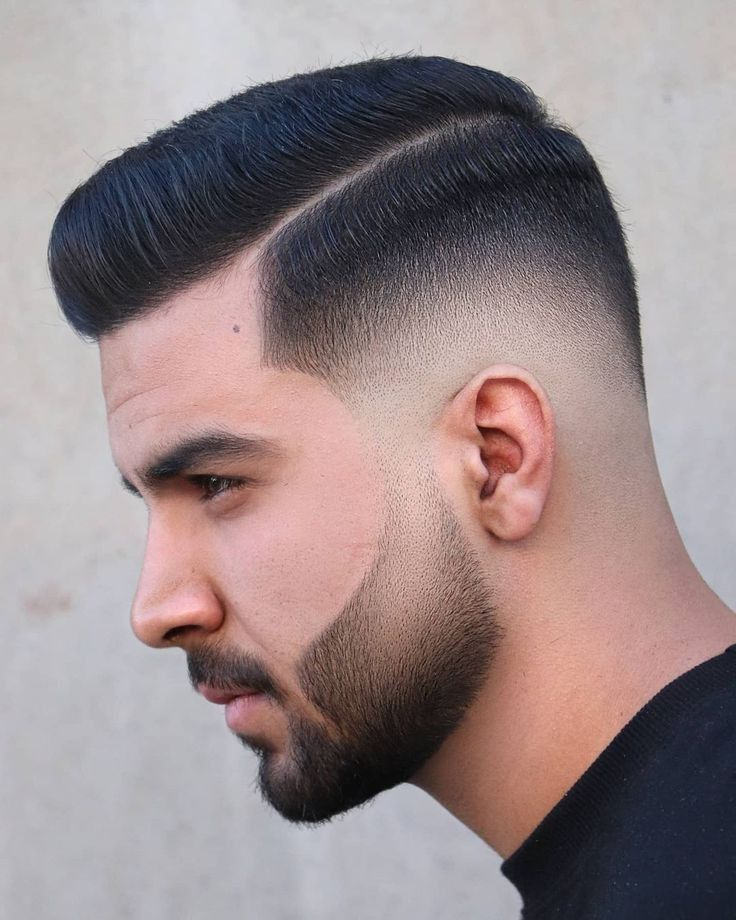
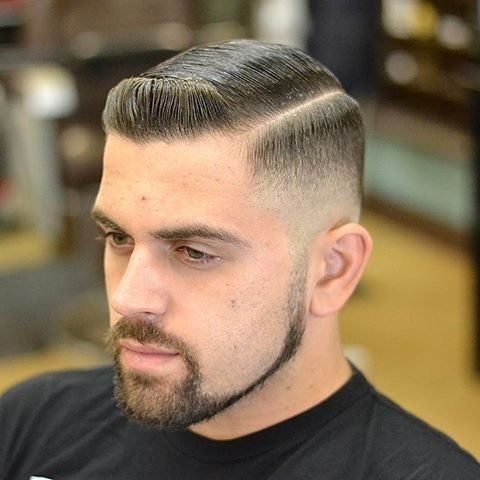

Nuestra Historia
En el corazón de un pequeño pueblo lleno de encanto, allá por 1995, nació El Pelito Feliz. Su fundador, don Felipe Pérez, un apasionado barbero de toda la vida, soñaba con crear un lugar donde el cuidado del cabello no solo fuera una necesidad, sino una experiencia. Inspirado por los relatos que había escuchado de su abuelo, quien también fue barbero, don Felipe quiso rendir homenaje a la tradición, pero con un toque moderno que atrajera a personas de todas las edades. Desde el principio, El Pelito Feliz no fue solo una barbería; se convirtió en un punto de encuentro para amigos, vecinos y familias. Era el lugar donde los niños se sentaban nerviosos por su primer corte, los adolescentes experimentaban con nuevos estilos, y los adultos compartían historias mientras disfrutaban de un café recién preparado. Todo esto sucedía bajo la mirada atenta de don Felipe, quien decía con una sonrisa: “Un buen corte puede cambiar tu día, pero un gran corte puede cambiar tu vida”. El nombre El Pelito Feliz no fue una casualidad. Don Felipe siempre creía que un cabello bien cuidado reflejaba felicidad y confianza.
Nuestros Servicios
Corte Corto
 

Estilo práctico y moderno.
Corte Mediano

Versatilidad y elegancia.
Corte Largo
Para destacar tu estilo único.
Corte y Barba / Solo Barba
 



Cuida tu barba con estilo.
Agendar Cita
Promociones
¡Corte + Barba con 20% de descuento los martes!